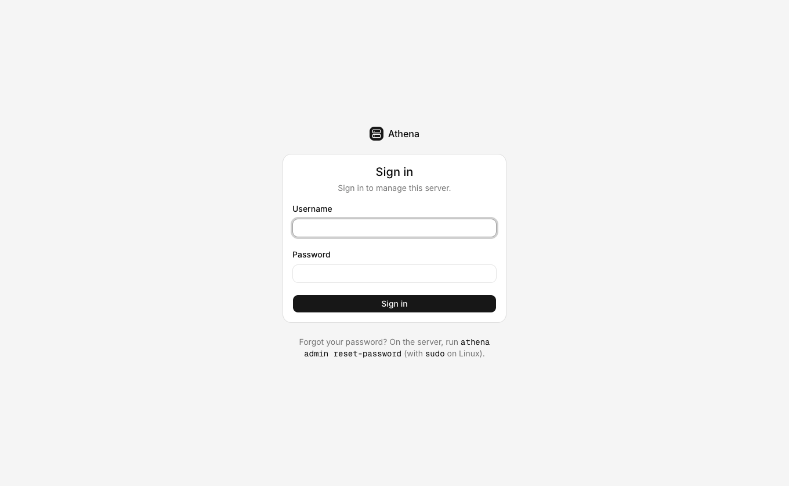

Getting started
Requirements
- System: Linux (systemd), macOS (launchd, Homebrew) or Windows.
- CPU: 64-bit, amd64 or arm64. A Raspberry Pi 4 or 5 running 64-bit Raspberry Pi OS works. The installer refuses a 32-bit system.
- Container runtime (needed for apps): the installer sets up Docker Engine on Linux and Colima on macOS. On Windows bring your own: Docker Engine in WSL2, Podman or Rancher Desktop. The installer prints the steps when it finds none.
- Python: nothing to do. The installer installs uv, which provides Python.
- On macOS run the installer as your normal user, not root.
Install
Linux and macOS
curl -fsSL https://github.com/Promethean-Works/athena/releases/latest/download/install.sh | bashWindows (PowerShell)
irm https://github.com/Promethean-Works/athena/releases/latest/download/install.ps1 | iexThe installer checks the download against the release's SHA256SUMS before installing it, then registers Athena to start automatically. Run the script with --help (-Help on Windows) to see every option: a specific version, a dry run, skipping the container runtime (--no-runtime), and uninstall.
First sign-in
Open http://<your-server-ip>:8420 in a browser. On the machine itself, that is http://localhost:8420.
The first visit asks you to create the administrator account. Nothing else is reachable until you do. After that, sign in with it.

If you forget the password, run this on the server (with sudo on Linux):
athena admin reset-passwordUpgrade
Run the install command again. It installs the latest release over the old one and keeps your data. To pin a version, pass --version <x.y.z> (-Version on Windows).
Uninstall
--uninstall removes Athena and keeps its data. Add --purge to delete the data folder too.
curl -fsSL https://github.com/Promethean-Works/athena/releases/latest/download/install.sh | bash -s -- --uninstall [--purge]On Windows use -Uninstall [-Purge] with the PowerShell form that takes options (see -Help).
Where Athena keeps its data
| System | Data folder |
|---|---|
| Linux | /var/lib/athena |
| macOS | ~/Library/Application Support/Athena |
| Windows | %LOCALAPPDATA%\Athena\data |
It holds the database, athena.json (your settings), the encryption key secret.key, and one folder per app. Back it up: see Backups. athena config path prints the exact location.